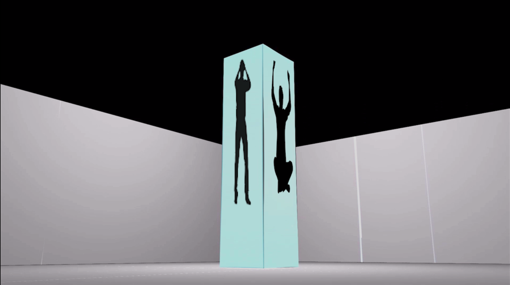

"Silhouettes of Emotions",Digital Video, 2mins
This is a commentary about how there are many in society who hide their true
emotions, rather than displaying their authentic self. The silhouettes are
placed on each side of the pillar because those "fake" emotions are being
used to build a character or personality that one uses when in public.
The sound of a distorted clock in the background is being used to show how
much time we worry about our appearance in public and how that reality just
does not feel real or natural.
Video
;